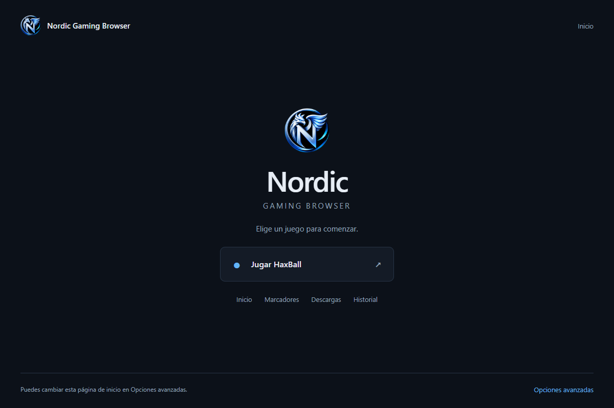
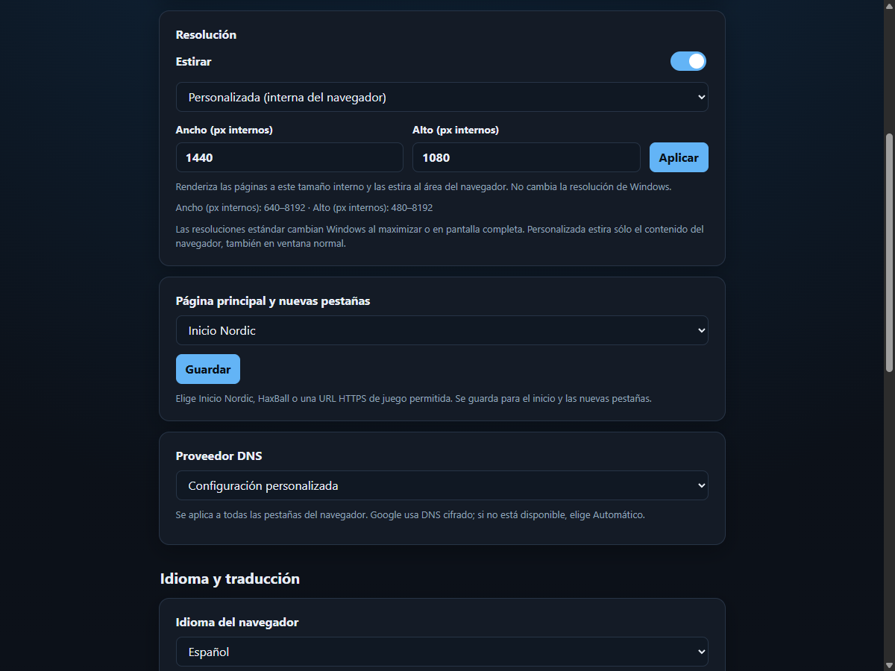

Encuentra tu ritmo.
Elige tu límite de FPS o desactívalo, ajusta la calidad gráfica y selecciona un modo de latencia de renderizado para HaxBall.
FPS · Gráficos · LatenciaHECHO PARA JUGAR HAXBALL
Tu partida, con tus ajustes. Un navegador basado en Chromium que reúne controles de rendimiento, personalización y herramientas para HaxBall en un mismo lugar.
Para Windows Nordic Gaming Browser

ChromiumLa base del navegador
HaxBallHerramientas integradas
8 temasTu estilo, también al jugar
Tu .CFGGuarda y carga tus ajustes
EL JUEGO, BAJO TU CONTROL
Del límite de FPS a las herramientas de sala. Configura Nordic según cómo juegas y lo que necesitas de tu equipo.
Elige tu límite de FPS o desactívalo, ajusta la calidad gráfica y selecciona un modo de latencia de renderizado para HaxBall.
FPS · Gráficos · LatenciaConfigura el retraso y la repetición del teclado con Filter Keys. Usa los ajustes predefinidos o establece tus propios valores.
Filter Keys · Ajustes de tecladoCombina los temas del navegador con las apariencias HTML5, Flash o Nordic de HaxBall. Personaliza avatares, reacciones e imágenes de equipos.
Temas · Avatares · EquiposAccede al selector de emojis, los controles del chat y las herramientas de sala. Ajusta la visibilidad del chat y utiliza las acciones de administración cuando tengas permisos.
Chat · Emojis · SalasAnaliza repeticiones de HaxBall, revisa estadísticas y prepara un informe con formato para Discord. También puedes guardarlo como texto.
Repeticiones · Estadísticas · InformesElige tu página de inicio, organiza tus marcadores y consulta historial y descargas. Guarda y carga tu configuración con archivos .CFG.
Inicio · Marcadores · ConfiguraciónEl rendimiento depende de tu hardware y configuración. Los modos de latencia ajustan el renderizado del juego; no cambian el ping de tu conexión.
A LA MEDIDA DE TU PANTALLA
Ajusta cómo se ve el juego, desde la ventana hasta el último detalle.
Usa una resolución estándar o activa Estirar para definir una resolución interna personalizada, también en ventana normal.
Conserva tus ajustes y lleva tu configuración a un archivo .CFG para volver a cargarla cuando la necesites.
Interfaz disponible en español, inglés y portugués, con temas que también se aplican al navegador.

NOS VEMOS EN DISCORD
COMUNIDAD NORDICEntra a nuestro Discord para conocer el browser, consultar los planes y precios, y recibir ayuda para empezar.
Consulta en Discord la versión disponible, las funciones incluidas y cómo obtener acceso.